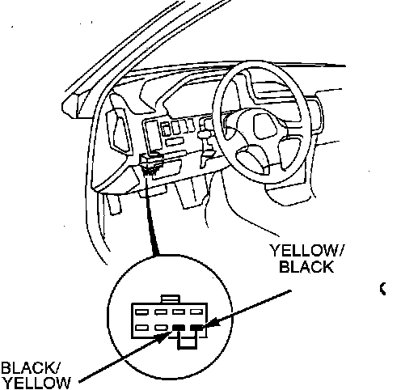
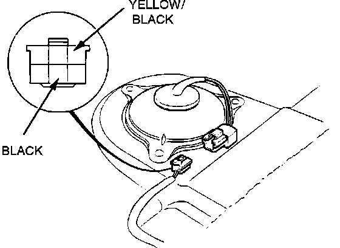
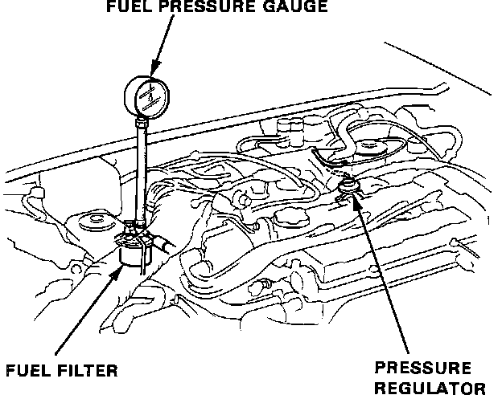
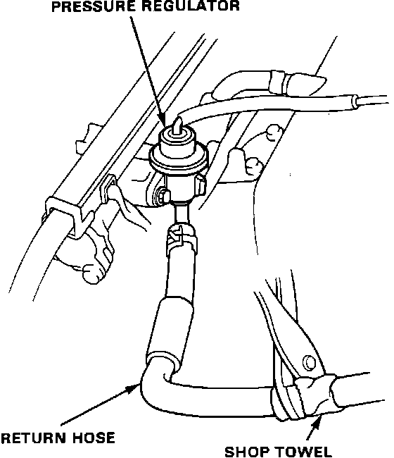

Fuel Pump: Testing and Inspection
OPERATION CHECK:If a problem is suspected with the Fuel Pump, check to be sure that the Fuel Pump actually runs. It should make a "humming" noise you can hear if you hold your ear to the fuel filler port with the filler cap removed. The Fuel Pump should run for two (2) seconds when the ignition switch is turned ON. If the Fuel Pump does not make a "humming" noise, check as follows:
1. Remove the fuel pump main relay, located under the dash area to the left of the steering wheel, mounted on the back of the fuse box.
2. Disconnect the connector from the fuel pump main relay.
CAUTION: Be sure to turn the ignition switch OFF before disconnecting the wires.
Fuel Pump Relay Connector:

3. Connect a jumper wire between the BLACK/YELLOW wire and the YELLOW/BLACK wire of the fuel pump main relay connector.
4. Remove the rear seat.
Fuel Pump 6P Connector:

5. Disconnect the Fuel Pump 6P connector. Make sure ignition switch is OFF before disconnecting wires.
6. Check that battery voltage is present at the Fuel Pump 6P connector when the ignition switch is turned ON. Apply positive probe to the YELLOW/BLACK wire and negative probe to the BLACK wire.
a. If battery voltage is present replace the Fuel Pump.
b. If there is no voltage, check the fuel pump main relay. If relay is found to be GOOD, refer to "Computers and Control Systems" for other faults.
7. Reinstall fuel pump main relay.
8. Reconnect Fuel Pump 6P connector, reinstall rear seat.
COMPLETE PUMP TEST:
If the Fuel Pump does make a "humming" noise but a problem with Fuel Pump output pressure or Fuel Pump check valve is suspected proceed with the following test:
WARNING: Do not smoke during the test. Keep open flames away from your work area. Be sure to relieve fuel pressure while engine is OFF.
1. Attach a pressure gauge to the service port of the fuel filter.
a. Disconnect the negative battery cable.
b. Remove the fuel tank filler cap.
Fuel Filter Typical:

c. Use a box end wrench on the 6mm service bolt at the top of the filter, while holding the special banjo bolt with another wrench.
d. Place a rag or shop towel over the 6mm service bolt and SLOWLY loosen the 6mm service bolt one complete turn.
Fuel Pressure Gauge:

e. Remove the service bolt on the top of the fuel filter while holding the banjo bolt with another wrench and attach the fuel pressure gauge.
2. START the engine. With the Fuel Pressure Regulator vacuum hose disconnected, fuel pressure should be:
37 - 44 psi (2.55 - 3.04 kg/cm2)
If the fuel pressure is above or below specifications, refer to "FUEL PRESSURE CHECK".
3. Reconnect the vacuum hose to the Fuel Pressure Regulator. Check that the fuel pressure rises when the vacuum hose is disconnected from the Fuel Pressure Regulator. If the fuel pressure rises when the vacuum hose is disconnected, the Fuel Pressure Regulator is GOOD.
4. If the fuel pressure did not rise, check whether it rises when the fuel return hose is lightly pinched. If the pressure rises when the return hose is pinched, replace the Fuel Pressure Regulator and retest.
5. Turn the engine OFF.
For the first five (5) minutes fuel pressure should stay at:
30 - 37 psi (2.10 - 2.55 kg/cm2)
For the first ten (10) minutes fuel pressure should drop no more than:
10 psi (.70 kg/cm2)
a. If the fuel pressure drops too fast, go to STEP 6.
b. If the fuel pressure remains stable, fuel pump and Fuel Pressure Regulator are GOOD.
Fuel Pressure Regulator Testing:

6. RESTART the engine, then turn it OFF and lightly pinch the fuel return hose from the Fuel Pressure Regulator.
a. If the fuel pressure remains stable, replace the Fuel Pressure Regulator.
b. If the fuel pressure still drops to fast, replace the fuel pump, as fuel pump check valve is bad.
7. Refer to "COMPONENT REPLACEMENT AND REPAIR PROCEDURES" if component replacement is needed.
8. Disconnect pressure gauge from the service port of the fuel filter and reinstall service bolt. Reattach any hoses that were removed. START engine, check for any leaks.
NOTE: Always replace the washer between the service bolt and the special banjo bolt, whenever the service bolt is loosened to relieve fuel pressure. Replace all washers whenever the bolts are removed to disassemble parts or hoses.